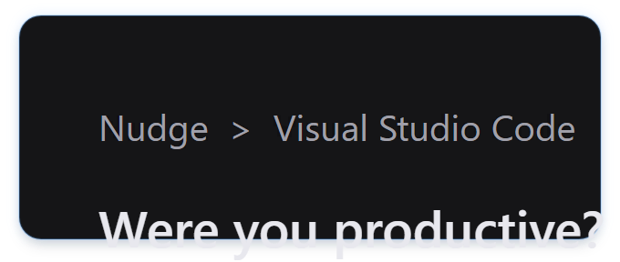
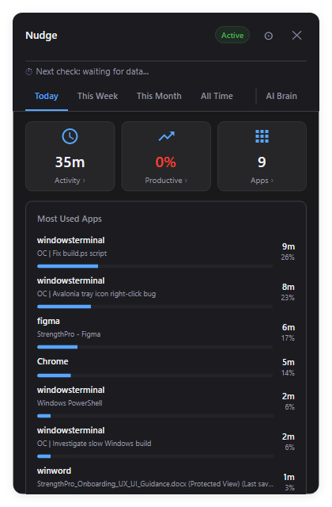
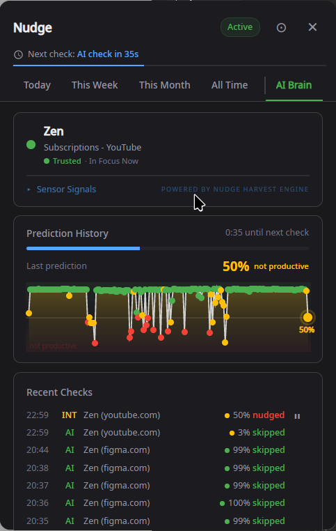

01
Asked at the
Asked at the
right time
Nudge checks in with you exactly when focus drops — not on a random timer.
- ML-driven checks every 60 seconds when active
- Random 5–10 min intervals while model is learning
- Falls silent when you’re deep in focus
02
See where
See where
time goes
Your day broken down by app, category, and productivity — all in one view.
- Today, Week, Month, and All Time views
- Hourly breakdowns with category colors
- analyzed


03
Trained on
Trained on
your answers
The AI Brain gives a live view of what Nudge sees in real time.
- Base model pre-trained up to 85% accuracy
- Personalized by learning your patterns locally
- Activates after 100 samples, retrains every 50
- No cloud — no data ever leaves your machine
The Stack
The technology behind Nudge
Harvest Engine
Uses sensor fusion technology to monitor your desktop activity across in real time — silently, locally, privately.
AI Brain
Real-time ML model that ingests Harvest data and predicts focus loss with high confidence before triggering.
Intelligent Alerts
Non-intrusive check-ins that validate predictions. Each answer retrains the model locally — making it smarter every day.
Try it on your
machine
Free and open source. No strings attached.
Download for Linux
Supports KDE Plasma, GNOME, XFCE, Cinnamon, and Sway (Wayland only).